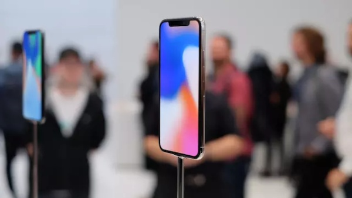
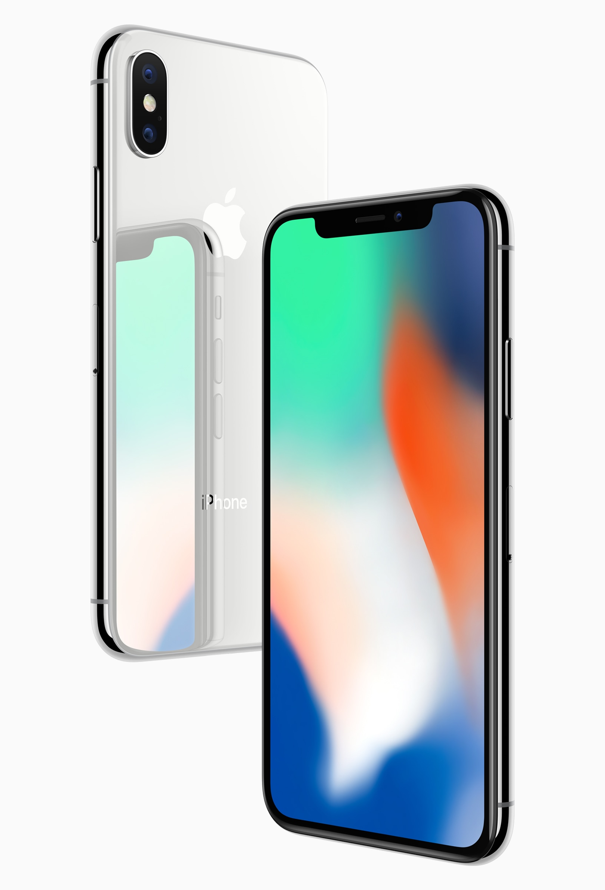
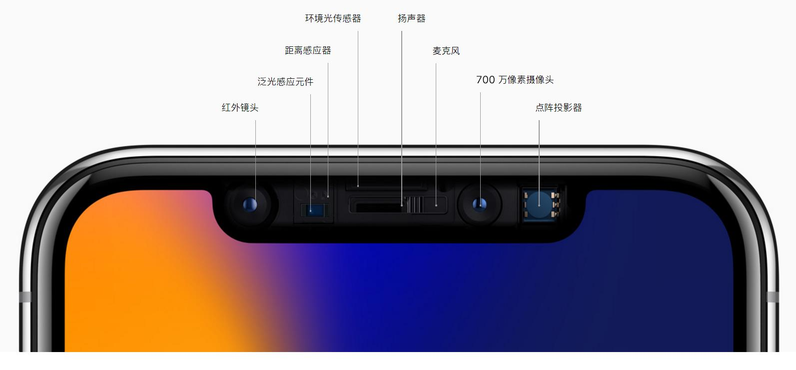
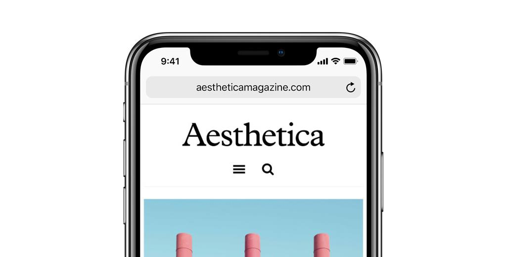
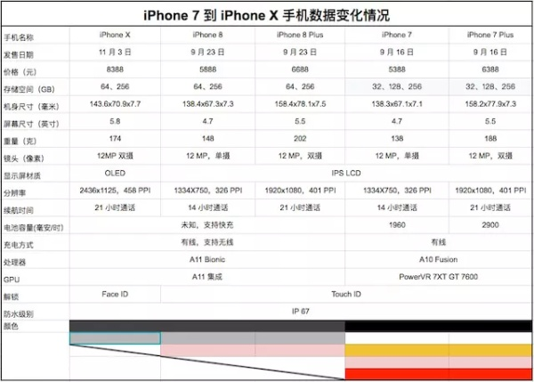

为什么得出这个结论，任何一款电子消费品，不仅仅应该关注其本身在功能、性能和设计上的优越性和品质，同时也要考虑其推出的时机、定位和潜在商业目标，只有完美平衡了前后两者的产品，才能称得上卓越。
产品角度的评价
- 是否有明确完整的功能
- 是否有让人眼前一亮的创新之处
- 是否有良好的用户使用体验
- 是否做到良好的工业设计
- 是否有明显的硬伤
- 合适的定价
- 完整的售后体系
商业角度的评价
- 是否存在明确的可升级迭代空间
- 是否有良好的价格歧视策略和目标用户分层
- 竞争上的平衡和差异化能力
- 毛利结构是否合理
- 完善的供应链
关于iPhone X本身
是否有明确完整的功能？
作为一部高端智能手机，该有的功能必须都有，没啥好说。
是否有让人眼前一亮的创新之处？
严格来说，受到苹果越来越“严格”的保密工作影响（笑），所以基本在发布会上就没有什么让人眼前一亮的地方了，而且从这一代iPhone来看，更多的创新是基于之前系列的产品，从技术角度角度而言算是取众友商之长。简单来谈谈iPhone X的新特性。

- 全面OLED屏 千呼万唤始出来，iPhone终于用上了OLED屏幕并迈向了全面屏时代，虽然说两个技术都不是什么新技术，友商们早已在其旗舰机型上开始布局，但至少也算得上是这代iPhone带来的最大诚意了。从OLED屏言，自视网膜屏开始的屏幕上升级边际效应是显著递减的，从消费者体验上可能不会有非常明显的感觉，更多还是在于心理感觉和市场营销噱头上。全面屏则更有科技感和未来感，感官和设计上的体验下要高于实际应用。因此，这次屏幕的升级可以认为是手机屏幕迭代的标准趋势。
- 深度摄像模组 前置深度摄像模组可以说是iPhone X 最重大的变革，这个功能模块直接拓展了iPhone对外部近场三位空间的感知能力（虽然精度应该都不会很高），但至少确定了了双目深度技术在智能机领域推进的必然趋势。就目前而言，这组摄像头主要用于人脸识别的Face ID辅助和表情捕捉，但未来基于此的第三方应用应该会进一步扩展其使用场景。
- Face ID 其实我一直认为人脸解锁噱头大于实用，因为图像识别的命中率和误判率指标都劣于指纹、密码等。换而言之，如果厂商不能在解锁效率和误解锁之间取得一个完美平衡的话（选择效率还是选择安全性），用户的使用体验是会比较糟糕的。因此，我认为人脸解锁智能作为快捷结算的一种候选方式。
- 无线充电 基本可以算烂大街的东西，终于集成进来了。目前Qi的无线充电技术仍然只支持1-3cm的近场充电，同时充电效率未知，所以基本上无线充电也是苹果填了个坑而已，估计目前水平的使用体验和老式家用无绳电话差不多。
- iOS 11 新版iOS让我比较看好的是AR kit和Core NFC。AR kit代表了基于手机AR发展的方向和可行性尝试，由苹果这样自带生态的大厂来主导是非常正确的决断。NFC断然不是什么新的东西，但确实是很好用，Core NFC的推出也意味着苹果终于打算接上自己瘸掉的一条腿。
是否有良好的用户使用体验
苹果iOS的应用体验基本是毋庸置疑的，除了偶尔会抽风的App Store外，基本处于顶尖水平，唯一值得关注的是就是苹果由于在中国应用市场的垄断性分成诉求造成的同中国开发者之间的矛盾，可能影响到中国用户的软件使用体验。
是否做到良好的工业设计
作为苹果安身立命的本领，其工业设计向来首屈一指。iPhone X的设计改动主要有这么几个：
- 双面玻璃+不锈钢中框的iPhone4构架 见仁见智，有人喜欢6系温润的手感，本人更倾向于4系的经典设计。同时，玻璃+不锈钢组合显得更结实耐操。
- 被取消的Home键 为了给全面屏幕让路，经典的home键终于退出了舞台，取而代之的是手势控制，总体来说仍然是见仁见智，牺牲了操作习惯换取更好的显示体验和整体设计感。
- 纵向放置的背部双摄 这个其实没啥好说的，估计是为了从背面区分iPhone X和iPhone 8吧。
是否有明显的硬伤
平心而论，iPhone X在产品层面说不上有什么硬伤，但是确实有几个不完美的地方。
- 迷之前脸 相信最让人不能接受的就是这个凹进去的前脸了，尤其在于游戏、影视和图片的体验上，都会让人觉得很膈应。只能说这是考虑前置深度摄像模组和全面屏的折中之法，虽然是丑了点，但用着用着也就习惯了，其冲击程度估计比起价格来差远了。
- 被取消的指纹传感器 全面屏的前置指纹传感确实是一件比较蛋疼的事情，但其实后置指纹传感也是相当不错的解决方案（参考华为）。指纹传感在现在已经成为智能机的标配，被取消掉有一种阉割了的感觉。
- 被取消的128G版本 这确实是苹果比较鸡贼的地方，直接把最实用的128G版本给Ban，差评。
合适的定价
这个定价让我莫名想到了一句话：苹果超级价格，颠覆传统价格…
完整的售后体系
苹果的售后一贯如此，没啥好说。
iPhone X 推出背后的商业策略
以下部分和广大消费者关系就不大了，基本上市基于厂商角度和商业层面的一些见解。
从商业策略上而言，苹果自后乔布斯时代开始，便进入了追求稳健的守成时代，从iPhone 5时代开始，其迭代和升级的节奏已经明显展示出了这种稳健的风格，而非一贯追求标新立异和大刀阔斧的修改，我们可以认为是由于苹果失去了乔帮主时代决然自信的妥协，但我更愿意理解为，这是在智能机渗透几近完成的全民移动时代，对市场和竞争的妥协。
在这种稳健的风格下，苹果采取了以iPhone 8为防守，iPhone X为进攻的兼备策略，并发布了相关的产品线。从其商业策略上，我们可以大致如此推演：
- 趋于平稳的存量市场 对于智能机而言，8年前的完全增量市场已经转变为目前渗透率近乎饱和的存量市场。而近年来安卓系统的崛起和IPhone市占率的下降是不争的事实。
- 产品线策略 对于定位高端智能机的苹果而言，在较难扩大市占率的情况下，提升差异化和使用价格歧视策略是其必然选择之一。其实苹果的产品线策略从iPhone SE和iPad Mini时代就开始执行了，虽然其目的是为了价格歧视以实现更广泛的 消费群体覆盖，但其宗旨仍然是要让同产品线上的产品看起来有同样的定位和风格。但这一代的X和8却从外观和体验上都有着较大的差异，苹果似乎将其作为两个不同重量级的产品。
- 感官差异较大的iPhone X 从iPhone X 产品本身而言，我认为这是苹果必须要做的，但这个定价却不是必须的，因此我们要放在一起来看。为什么说必须做，是因为友商们都在做，而苹果是一家标榜高科技的公司，如果不做就会陷入人有我无的尴尬境地，从而失去的
抢钱科技的制高点。而高价则不是必须的，因为历来iPhone的毛利结构就非常骇人，成本不需要那么高，那么我认为iPhone X对苹果的意义可能更重要的是在于对用户需求刚性程度的测试。 - 平滑升级的iPhone 8系列 单有iPhone X的激进风格对苹果来说是不安全的，单一高定价策略会抹杀大部分存量用户和，若销量显著低于预期，苹果就基本无法回应董事会和华尔街的期待了。因此，苹果同时推出了平滑升级版的iPhone 8系列，但同时为了给iPhone X铺路，iPhone 8的外观没有改动也就显得合理起来，不是懒得改，是根本不想改。
- 更高的心理锚定和价格歧视 通过顶配高价的iPhone X，苹果实际上需要重新锚定其在消费者心中的绝对高端地位，正如10年前堪称奢侈品的iPhone定价一般。上调而非下压产品线价格，目的是从核心用户中抽取更多的利润，同时进行这部分群体数量的压力测试，以便为之后的产品和定价策略铺路。但显然这存在一定的风险，因此就又有了iPhone 8这条线，两者组成了一套攻守兼备的组合拳，在品牌心理锚定的基础上完成充分的价格歧视。
是否有良好的价格歧视策略和目标用户分层
上面的分析基本已经回答了这个问题，苹果就是在明确的价格歧视和目标用户划分策略下推进新款iPhone的。
商业持续性
除了商业竞争和定位策略外，我们还可以简单看下苹果在产品延续性和供应生产上做的努力（挖的坑）。
是否存在明确的可升级迭代空间
作为试水之作的iPhone X，在升级迭代上市预留了明显的空间的，可以预测其迭代的重点在于前脸改进、5G网络通讯、后置双摄深度感知、指纹传感、AR内置应用、高冗余度无线充电技术这些方面。

毛利结构是否合理
这个毫无问题，没啥好说。
完善的供应链
应该可以断言苹果没有将其供应链主要精力放在iPhone X上，这是由iPhone X的试水定位和高端定价策略决定的。首先，在绝对产能上，iPhone X需求量理论上要效应平滑升级且价格亲民的iPhone 8系列。其次，通过延期发售可以让苹果有充裕的时间测试消费市场的需求强度，从而进行供应链和产能的再分配。